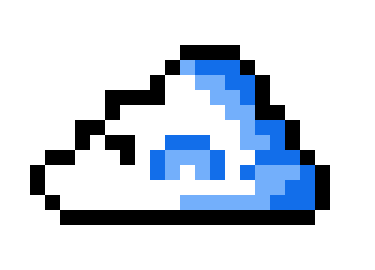
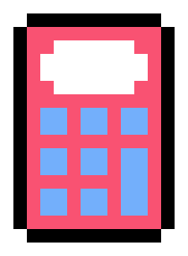

Hello World!
This is Derya's personal website
About
Thoughts
Books

What is Data Vis?
Communicating Science Research
Perspective
Learning about Learning

Abstract Abstracts
Trustworthiness in Qualitative Research
Data Portraits
Visualizing Uncertainty
On Writing Abstracts
What is HCI?
Why get a PhD?
Semiotics
Make a Mark
Semantic Based Economic Mapping